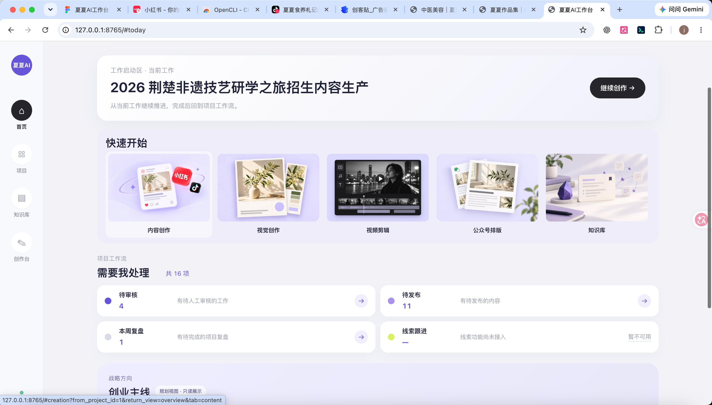

AI PRODUCT × CONTENT GROWTH
把业务问题
做成产品，
把内容策略
落到行动。
你好，我是夏夏。过去，我在品牌、IP、内容与增长现场解决业务问题；现在，我把这些经验转化为 AI 产品和工作流程。希望继续参与有真实业务场景的 AI 产品实践。
XX / PORTFOLIO 202601 — 05
X
真实业务
AI 产品实践2026
AI 产品实践2026
当前项目 / 01
目前正在做的
把真实业务、内容获客方法和 AI 工作流做成可持续使用的产品。
AI 产品 · 内容增长 · 业务落地
0→1 产品实践，持续迭代夏夏 AI 内容
获客系统
面向一人公司和小企业，把业务知识、获客方法、选题、内容生产与反馈复盘放进同一套 AI 工作流。 以“方法 + AI 工作台 + 项目搭建 + 共创陪跑”推进首期产品与服务验证。
查看项目案例

更多案例 / 02—05
更多案例
来自我实际参与的品牌、IP、内容增长与课程项目。
能力递进 / 06
这些经历，最后汇成了什么
我不是从内容岗位突然转向 AI，而是在真实业务中逐步积累用户理解、增长、获客和业务协同能力，最后把这些经验转成产品与工作流。
关于 / 07
关于夏夏
从真实业务和内容增长场景走出来的 AI 产品实践者。
我做过零售、中医教育和大健康等业务，长期参与内容获客、创始人 IP、用户增长、课程转化、品牌运营和跨团队协作。
相比单纯从技术或产品框架出发，我更习惯先理解业务问题、用户需求和实际流程，再判断 AI 能解决什么，并把需求逐步转成产品、工作流和可验证的使用场景。
求职方向｜AI 产品经理 / AI 产品运营 / 内容增长
聚焦场景｜内容增长 / 营销获客 / AI 工作流